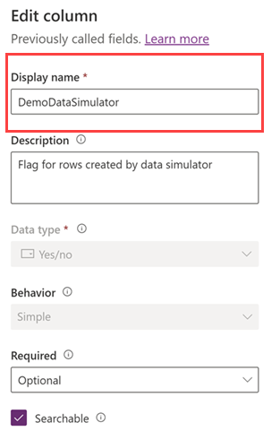
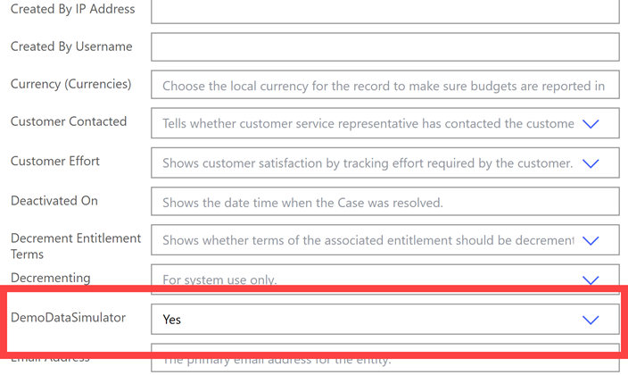
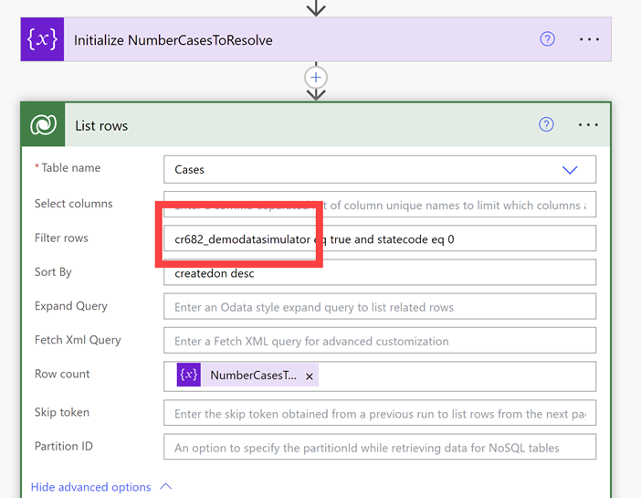
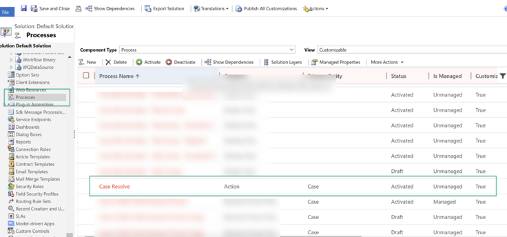
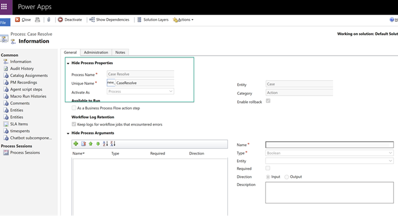
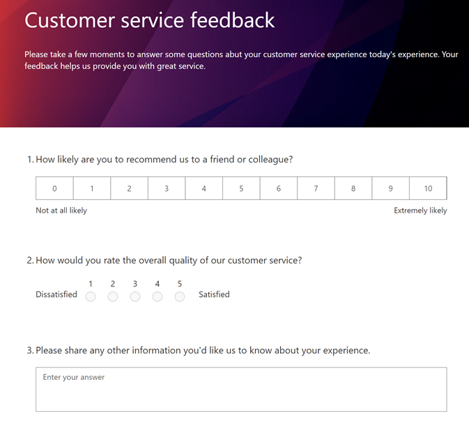
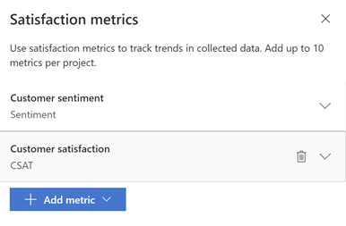

D365 Case Data Simulator
D365 Case Data Simulator is a robust data simulator for D365 Customer Service. This collection of Power Platform Assets and documentation that will allow you to automate case data being populated in your D365 Customer Service environment so some of your D365 Customer Service Dashboards and Reports light up with meaningful data. The intended audience for D365 Case Data Simulator are D365 and/or Power Platform Professionals who have experience bulk loading data in Dataverse and editing Cloud Flows and Desktop Automations using Power Automate.
Visit D365 Case Data Simulator on GitHub
Important
D365 Case Data Simulator isn't intended to be run within environments that have live D365 Customer Service Data. If you do this you will end up co-mingling demo data with real D365 Customer Service Case Data records. The simulator will flag records that it creates but this means you will need to prune those records. So please, don't run this in an environment where there is live D365 Customer Service data.
Best practice is to run D365 Case Data Simulator in an environment that you use as a Sandbox or to experiment with D365 capabilities such as one of your demonstration environments.
This simulator won't work until you perform the following configurations steps followed below.
What's Included
There are two solutions included in the GitHub repository.
- CaseDataSimulatorSolution - Core Cloud Flows and Connection Reference which will bulk load and resolve cases at regularly scheduled intervals.
- CaseDataSimulatorSolutionOptional - Optional package. You only need to install this should you want to automate the process of survey's being taken following the resolution of cases. Surveys allow you to capture CSAT and Customer Sentiment so that these values will populate in your D365 Analytics. This solution contains a Cloud Flow, Connection Reference and 3 Desktop Automations.
Starting Off
If you've made it this far you may want to use D365 Case Data Simulator. Do this next.
- Identify the Dataverse environment you will use. See "Important" above. Ensure your user account has the proper privileges to create, read and update Case records.
- Create a custom field (Boolean - Yes/No data type) named "DemoDataSimulator" in the Case Table.

- Get the repository from GitHub. You can download the zip package using the green button named "Code". You can also clone the repo as you typically would with command line or desktop tools.
- To maximize portability the Cloud Flows contain data arrays
Steps to Configure the Core Package
- Import the solution in your target environment.
- Edit the Cloud Flow named "Case Data Simulator - Create New Cases Each Business Hour".
- Expand the "Do Until" action. Go to the "Add a new row" action. Make sure the DemoDataSimulator is set to "Yes". This way your cases will be flagged that this Flow creates. You might need to change the selection and then change it back to "Yes". You will first need to do this before you can save the Cloud Flow.

- Modify CaseTitles Array.
- Modify CaseType Array. Go to the Case table to view the Case Type values available.
- Modify Subjects Array. Go to the Subjects table and extract GUIDs for the Active Subject records you want to use. There is a one to many relationship between Subjects and Cases.
- Modify Contacts Array. Go to the Contacts table and extract GUIDs for the Active Contact records you want to use. There is a one to many relationship between Contacts and Cases. Use Contact records that have First and Last names populated as those are used in the Cloud Flow.
- Modify Priority Array. Go to the Case table to view the Priority values available.
- Modify Products Array. Go to the Products table and extract GUIDs for the Active Product records you want to use. There is a one to many relationship between Products and Cases. Only add products that aren't kits as I've encountered Dataverse issues when adding kitted products.
- Modify Origins Array. To get valid values for this you will need to go to Choices->Case Origins. Click on Case Origins and you will see the values available.
- Modify Owners Array. Owners of cases are users of D365, so in this case, D365 Users that have Customer Service Representatives/Supervisor roles. Retrieve D365 User GUIDs.
- Modify StatusReason Array. Go to the Case table to view the Status Reason values available that are associated to the Active state.
- Modify other aspects of the "Case Data Simulator - Create New Cases Each Business Hour" Cloud Flow to align with your preferences for how you want it to run. You may want to modify the schedule, how many cases it creates per each time it runs (its currently setup as a random number between 15 and 25).
- Edit the Cloud Flow named "Case Data Simulator - Resolve Cases".
- Expand the List Rows action, click on Advanced to open up additional options. You will need to change the internal name of the DemoDataSimulator field.

- Modify Resolutions Array.
- Modify StatusValues Array. The current setup is biased towards the value 1, which is a "Resolved" case. Feel free to add more/less 1's. A 2 is a "Cancelled" case.
- Modify StatusReasonsResolved Array. Make sure to only have values which map to the "Resolved" Case State.
- Modify StatusReasonsCancelled Array. Make sure to only have values which map to the "Cancelled" Case State.
- Dataverse has a quirk which restricts the ability to Resolve or Cancel a Case - we can workaround this by authoring to minimal Processes in D365 that Resolve or Cancel the Case for us. Then we tell D365 to run these processes from the Cloud Flow and hand the Case context to the process so it performs the action on the target case. Your processes can be named "new_CaseResolved" and new_CaseCancelled" to align with the action in the Cloud Flow that calls them.


- After creating your processes you may need to reselect the name of the Process in the Actions.
Steps to Configure the Optional Package
- The Cloud Flow within this solution kicks off Desktop Automations that take surveys by launching a Chrome browser window, clicking on form fields and populating text in a text area.
- You will need to have a D365 Customer Voice survey setup which asks 3 questions in the following order: NPS, Rating (Use Number), Text
- You will need to define 2 Satisfaction Metrics for your survey, Sentiment and CSAT. Bind Sentiment Satisfaction Metric to Question #3 (Text). Bind CSAT Satisfaction Metric to Question #2 (Rating)


- You will need to have a Cloud Flow which sends out D365 Customer Voice Surveys when cases are resolved. A Power Automate template exists to help you set this up.
- In order to run these desktop automations you will need to have Machine available to run these desktop automations. Here are the instructions for registering a Machine with Browser extensions. When installing the Power Automate Desktop runtime select your target environment that you will be importing this solution in to. This machine will need to have Chrome installed.
- Import the solution in your target environment.
- When importing the solution you will need to select a Machine for the connection to Power Automate Desktop. Select the machine you want to run your Desktop Automations.